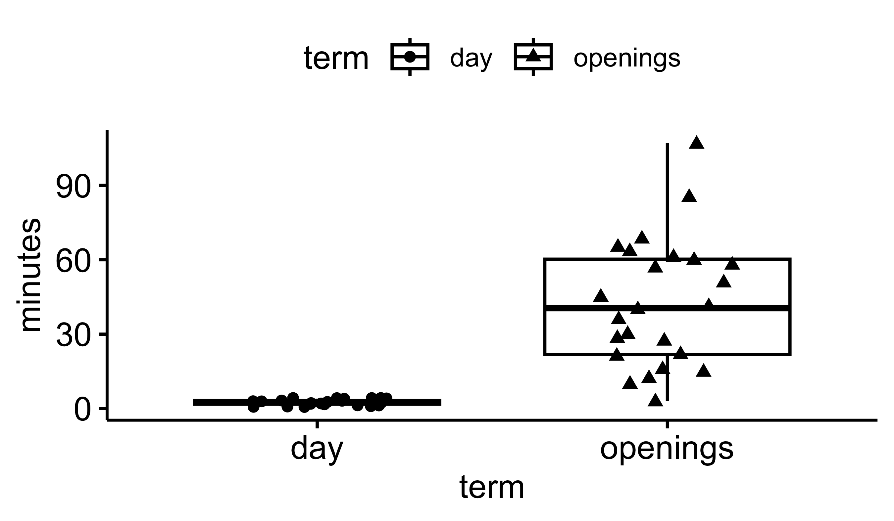

8. ANOVA
Comparing the Means of More than Two Groups
Smit, A. J. ![]()

“The ocean is the life support system of Earth.”
— Sylvia A. Earle (paraphrase)
- Single factor ANOVA
- Multiple factor ANOVA
- Tukey HSD test
- Wilcoxon rank sum test
- Kruskal-Wallis rank sum test
Find here a Cheatsheet on statistical methods.
- Task G
1 At a Glance
Where the Student’s and Welch’s t-tests are used to test for the difference between the means of two groups, analysis of variance (ANOVA)1 is used to compare the means of three, more groups. The following expectations about your data should be met to conduct an ANOVA:
1 Variations of the basic ANOVA include an analysis of covariance (ANCOVA) when, in addition to the categorical variable, your data also contains a continuous covariate (e.g., age, mass) that you want to control. Or, if your study involves multiple dependent variables, you may need to consider using multivariate analysis of variance (MANOVA) instead. ANOVAs that have multiple independent variables are called factorial ANOVAs (e.g. 2-way ANOVA, 3-way ANOVA).
Continuous dependent variable The dependent variable should be measured on a continuous scale (e.g., height, weight, test scores).
Categorical independent variable The independent variable should be categorical with at least three levels or groups (e.g., different treatments, age groups).
- Independent groups The groups being compared should be independent of each other, meaning that the observations within each group should not affect the other group’s observations. In the case of repeated measures ANOVA, the groups are related (e.g., before-and-after measurements, multiple measurements on the same subjects).
Other assumptions to be aware of with regards to the dependent variable:
- Independence of data
- Normally distributed data
- Homogeneity of variances
- We also encourage that the data are balanced
2 Introduction to ANOVA
Whole big books have been written about analysis of variance (ANOVA). Although there are many experimental designs that may be analysed with ANOVAs, biologists are taught to pay special attention to the design of experiments, and generally make sure that the experiments are fully factorial (in the case of two-way, higher ANOVAs) and balanced. For this reason we will focus in this introductory statistics course on one-way and factorial ANOVAs only.
A factorial experimental design involves studying the effects of two or more factors (also known as independent variables) on a response variable (dependent variable) simultaneously. The term ‘factorial’ comes from the fact that each level of one factor is combined with each level of the other factor(s), resulting in all possible combinations of factor levels.
In a factorial design, the main effects of each factor, the interaction effects between factors can be analysed. When we have two factors and this is typically done by applying a 2-way ANOVA, but higher-order ANOVAs are also available. The main effect of a factor is its individual effect on the response variable (ignoring the effect due to the other(s)), while the interaction effect occurs when the effect of one factor depends on the level of another factor.
The simplest factorial design is the 2 \(\times\) 2 design, which involves two factors, each with two levels. For example, if you are studying the effect of temperature (high vs. low), fertiliser concentration (high vs. low) on the yield of a crop and a 2 \(\times\) 2 factorial design would involve four experimental conditions:
- high temperature and high fertiliser concentration
- high temperature and low fertiliser concentration
- low temperature and high fertiliser concentration
- low temperature and low fertiliser concentration
In the above example there are 4 possible combinations. Factorial designs can involve more than two factors and/or more than two levels per factor, leading to more complex experimental setups. For example, in a 3 \(\times\) 4 there will be 12 combinations of the two factor levels, and in a 2 \(\times\) 3 \(\times\) 5 factorial experiment the three factors with their respective levels will result in 30 combinations.
As we have seen in Chapter 7 about t-tests, ANOVAs also require that some assumptions are met:
Normal distribution The data in each group should follow a normal distribution or be approximately normally distributed. If the assumption of normality is not met, as, for example, determined with the
shapiro.test(), you may consider using a non-parametric alternative such as Kruskal-Wallis rank sum test,kruskal.test(). This assumption can be relaxed for large sample sizes due to the Central Limit Theorem.Homoscedasticity The variances of the groups should be approximately equal. This assumption can be tested using Levene’s test,
car::leveneTest(), or Bartlett’s test,bartlett.test(). When the variances are different but the data are normally distributed, consider the ‘Welch ANOVA,’oneway.test(), instead ofaov().Random sampling The data should be obtained through random sampling or random assignment, ensuring that each observation has an equal chance of being included in the sample.
Independent observations The observations within each group should be independent of each other.
If some of the above assumptions are violated, then your course of action is to either use a non-parametric test (and here), transform the data (as in Chapter 6), use a generalised linear model if non-normal or to use a linear mixed model when non-independence of data cannot be guaranteed. As I have already indicated, ANOVAs are also sensitive to the presence of outliers, so we need to ensure that outliers are not present. Outliers can be removed but if they are an important feature of the data, then a non-parametric test can be used.
Rather than talking about t-tests and ANOVAs as if they do different things, let us acknowledge that they ask a similar question. That question being, “are the means of these two, more things we want to compare different or are they the same?” At this stage it is important to note that, as with t-tests, the independent variable is expected to be categorical (i.e. a factor denoting two, more different treatments or sampling conditions) and that the dependent variable must be continuous. You may perhaps be more familiar with this question when it is presented as a set of hypotheses as we saw in a t-test:
- H0 Group A is not different from Group B.
- Ha Group A is different from Group B.
In an ANOVA, hypotheses will be more similar to these:
- H0 There are no differences among Groups A, B, or C.
- Ha There are differences among Groups A, B, or C.
This is a scientific question in the simplest sense. Often, for basic inquiries such as that posed above, we need to see if one group differs significantly from another. The way in which we accomplish this is by looking at the mean, variance within a set of data compared against another similar set.
2.1 Remember the t-test
As you already know, a t-test is used when we want to compare two different sample sets against one another. This is also known as a two-factor, two level test. When one wants to compare multiple (more than two) sample sets against one another an ANOVA is required (I will get there shortly). Remember how to perform a t-test in R: we will revisit this test using thechicks data, but only for Diets 1, 2 from day 21.
Once we have filtered our data we may now perform the t-test.
R>
R> Welch Two Sample t-test
R>
R> data: weight by Diet
R> t = -1.2857, df = 15.325, p-value = 0.2176
R> alternative hypothesis: true difference in means between group 1 and group 2 is not equal to 0
R> 95 percent confidence interval:
R> -98.09263 24.19263
R> sample estimates:
R> mean in group 1 mean in group 2
R> 177.75 214.70As one may recall from Chapter 7, whenever we want to give a formula to a function in R, we use the ~. The formula used above, weight ~ Diet, reads in plain English as “weight as a function of diet”. This is perhaps easier to understand as “Y as a function of X.” This means that we are assuming whatever is to the left of the ~ is the dependent variable, and whatever is to the right is the independent variable. Did the Diet 1, 2 produce significantly fatter birds?
One could also supplement the output by producing a graph (Figure 1).
library(ggstatsplot)
## Since the Confidence Intervals for the Effect Sizes Are Computed Using
## Bootstrapping, Important to Set a Seed for Reproducibility
set.seed(13)
## Parametric T-test and Box Plot
ggbetweenstats(
data = chicks_sub,
x = Diet,
y = weight,
xlab = "Diet",
ylab = "Chick mass (g)",
plot.type = "box",
p.adjust.method = "bonferroni",
pairwise.display = "ns",
type = "p",
results.subtitle = FALSE,
conf.level = 0.95,
title = "t-test",
ggtheme = ggthemes::theme_fivethirtyeight(),
package = "basetheme",
palette = "ink"
)Notice above that we did not need to specify to use a t-test. The ggbetweenstats() function automatically determines if an independent samples t-test or a 1-way ANOVA is required based on whether there are two groups or three or more groups within the grouping (factor) variable.
That was a nice revision. But applied to the chicks data it seemed a bit silly, because you may ask, “What if I wanted to know if there are differences among the means computed at Day 1, Day 6, Day 10, and Day 21?” We should not use t-tests to do this (although we can). So now we can move on to the ANOVA.
- Why should we not just apply t-tests once per each of the pairs of comparisons we want to make?
2.2 Why Not Do Multiple t-tests?
In the chicks data we have four diets, not only two as in the t-test example just performed. Why not then simply do a t-test multiple times, once for each pair of diets given to the chickens? Multiple t-tests would be written as:
- \(H_{0}: \mu_1 = \mu_2\)
- \(H_{0}: \mu_1 = \mu_3\)
- \(H_{0}: \mu_1 = \mu_4\)
- \(H_{0}: \mu_2 = \mu_3\)
- \(H_{0}: \mu_2 = \mu_4\)
- \(H_{0}: \mu_3 = \mu_4\)
This would be invalid. The problem is that the chance of committing a Type I error increases as more multiple comparisons are done. So, the overall chance of rejecting the H0 increases. Why? If one sets \(\alpha=0.05\) (the significance level below which the H0 is no longer accepted), one will still reject the H0 5% of the time when it is in fact true (i.e. when there is no difference between the groups). When many pairwise comparisons are made, the probability of rejecting the H0 at least once is higher because we take this 5% risk each time we repeat a t-test. In the case of the chicken diets, we would have to perform six t-tests, and the error rate would increase to slightly less than \(6\times5\%\). See Table 1.
0.2 to 0.0001 are shown.
| K | 0.2 | 0.1 | 0.05 | 0.02 | 0.01 | 0.001 |
|---|---|---|---|---|---|---|
| 2 | 0.20 | 0.10 | 0.05 | 0.02 | 0.01 | 0.00 |
| 3 | 0.49 | 0.27 | 0.14 | 0.06 | 0.03 | 0.00 |
| 4 | 0.74 | 0.47 | 0.26 | 0.11 | 0.06 | 0.01 |
| 5 | 0.89 | 0.65 | 0.40 | 0.18 | 0.10 | 0.01 |
| 10 | 1.00 | 0.99 | 0.90 | 0.60 | 0.36 | 0.04 |
| 20 | 1.00 | 1.00 | 1.00 | 0.98 | 0.85 | 0.17 |
| 100 | 1.00 | 1.00 | 1.00 | 1.00 | 1.00 | 0.99 |
If you insist in creating more work for yourself and do t-tests many times, one way to overcome the problem of committing Type I errors that stem from multiple comparisons is to apply a Bonferroni correction.
The Bonferroni correction is used to adjust the significance level of multiple hypothesis tests, such as multiple paired t-tests among many groups, in order to reduce the risk of false positives, Type I errors. It is named after the Italian mathematician Carlo Emilio Bonferroni.
The Bonferroni correction is based on the principle that when multiple hypothesis tests are performed, the probability of observing at least one significant result due to random chance increases. To correct for this, the significance level (usually 0.05) is divided by the number of tests being performed. This results in a more stringent significance level for each individual test, it so reduces the risk of committing a Type I error.
For example, if we conduct ten hypothesis tests, the significance level for each test after Bonferonni correction would become 0.05/10 = 0.005. The implication is that each individual test would need to have a p-value less than 0.005 to be considered significant at the overall significance level of 0.05.
On the downside, this method can be overly conservative, we may then increase the risk of Type II errors and which are false negatives. If you really cannot avoid multiple tests, then also assess one of the alternatives to Bonferonni’s method, viz: the false discovery rate (FDR) correction, the Holm-Bonferroni correction, Benjamini-Hochberg’s procedure, the Sidak correction, or some of the Bayesian approaches.
Or better still, we do an ANOVA that controls for these Type I errors so that it remains at 5%.
3 ANOVA
If we have four groups whose means we want to compare, a suitable H0 would be:
\(H_{0}: \mu_1 = \mu_2 = \mu_3 = \mu_4\)
and
\(H_{a}\): the means of the four groups are not equal.
Here, \(\mu_1\), \(\mu_2\), \(\mu_3\),\(\mu_4\) are four population means. For the H0 to be rejected, all that is required is for one of the pairs of means to be different, not all of them.
3.1 Single Factor
We continue with the chicken data. The t-test showed that Diets 1 and 2 resulted in the same chicken mass at Day 21. What about the other two diets? Our H0 is that, at Day 21, \(\mu_{1}=\mu_{2}=\mu_{3}=\mu_{4}\). Is there a statistical difference between chickens fed these four diets, or do we retain the H0? The R function for an ANOVA is aov(). To look for significant differences between all four diets on the last day of sampling we use this one line of code:
R> Df Sum Sq Mean Sq F value Pr(>F)
R> Diet 3 57164 19055 4.655 0.00686 **
R> Residuals 41 167839 4094
R> ---
R> Signif. codes: 0 '***' 0.001 '**' 0.01 '*' 0.05 '.' 0.1 ' ' 1- What does the outcome say about the chicken masses? Which ones are different from each other?
- Devise a graphical display of this outcome.
If this seems too easy to be true, it is because we are not quite done yet. You could use your graphical display to eyeball where the significant differences are, or we can turn to a more ‘precise’ approach. The next step one could take is to run a Tukey HSD test on the results of the ANOVA by wrapping tukeyHSD() around aov():
R> Tukey multiple comparisons of means
R> 95% family-wise confidence level
R>
R> Fit: aov(formula = weight ~ Diet, data = filter(chicks, Time == 21))
R>
R> $Diet
R> diff lwr upr p adj
R> 2-1 36.95000 -32.11064 106.01064 0.4868095
R> 3-1 92.55000 23.48936 161.61064 0.0046959
R> 4-1 60.80556 -10.57710 132.18821 0.1192661
R> 3-2 55.60000 -21.01591 132.21591 0.2263918
R> 4-2 23.85556 -54.85981 102.57092 0.8486781
R> 4-3 -31.74444 -110.45981 46.97092 0.7036249The output of tukeyHSD() shows us that pairwise comparisons of all of the groups we are comparing. We can also display this as a very rough figure (Figure 2):
We may also produce a nicer looking graphical summary in the form of a box-and-whisker plot and/or a violin plot. Here I combine both (Figure 3):
set.seed(666)
## Parametric T-test and Box Plot
ggbetweenstats(
data = filter(chicks, Time == 21),
x = Diet,
y = weight,
xlab = "Diet",
ylab = "Chick mass (g)",
plot.type = "box",
boxplot.args = list(notch = TRUE),
type = "parametric",
results.subtitle = FALSE,
pairwise.comparisons = TRUE,
pairwise.display = "s",
p.adjust.method = "bonferroni",
conf.level = 0.95,
title = "ANOVA",
ggtheme = ggthemes::theme_fivethirtyeight(),
package = "basetheme",
palette = "ink"
)1.58 * IQR / sqrt(n). This is approximately equivalent to a 95% confidence interval and may be used for comparing medians.
Look at the help file for the TukeyHSD() function to better understand what the output means.
- How does one interpret the results? What does this tell us about the effect that that different diets has on the chicken weights at Day 21?
- Figure out a way to plot the Tukey HSD outcomes in ggplot.
- Why does the ANOVA return a significant result, but the Tukey test shows that not all of the groups are significantly different from one another?
3.2 Multiple Factors
What if we have multiple grouping variables, and not just one? We would encounter this kind of situation in factorial designs. In the case of the chicken data, there is also time that seems to be having an effect.
- How is time having an effect? (/3)
- What hypotheses can we construct around time? (/2)
Let us look at some variations around questions concerning time. We might ask, at a particular time step, are there differences amongst the effect due to diet on chicken mass? Let us see when diets are starting to have an effect by examining the outcomes at times 0, 2, 10, and 21:
R> Df Sum Sq Mean Sq F value Pr(>F)
R> Diet 3 4.32 1.440 1.132 0.346
R> Residuals 46 58.50 1.272R> Df Sum Sq Mean Sq F value Pr(>F)
R> Diet 3 158.4 52.81 4.781 0.00555 **
R> Residuals 46 508.1 11.05
R> ---
R> Signif. codes: 0 '***' 0.001 '**' 0.01 '*' 0.05 '.' 0.1 ' ' 1R> Df Sum Sq Mean Sq F value Pr(>F)
R> Diet 3 8314 2771 6.46 0.000989 ***
R> Residuals 45 19304 429
R> ---
R> Signif. codes: 0 '***' 0.001 '**' 0.01 '*' 0.05 '.' 0.1 ' ' 1R> Df Sum Sq Mean Sq F value Pr(>F)
R> Diet 3 57164 19055 4.655 0.00686 **
R> Residuals 41 167839 4094
R> ---
R> Signif. codes: 0 '***' 0.001 '**' 0.01 '*' 0.05 '.' 0.1 ' ' 1- What do you conclude from the above series of ANOVAs? (/3)
- What problem is associated with running multiple tests in the way that we have done here? (/2)
Or we may ask, regardless of diet (i.e. disregarding the effect of diet by clumping all chickens together), is time having an effect?
R> Df Sum Sq Mean Sq F value Pr(>F)
R> as.factor(Time) 3 939259 313086 234.8 <2e-16 ***
R> Residuals 190 253352 1333
R> ---
R> Signif. codes: 0 '***' 0.001 '**' 0.01 '*' 0.05 '.' 0.1 ' ' 1- Write out the hypotheses for this ANOVA. (/2)
- What do you conclude from the above ANOVA. (/3)
Or, to save ourselves a lot of time, reduce the coding effort and we may simply run a two-way ANOVA and look at the effects of Diet and Time simultaneously. To specify the different factors we put them in our formula and separate them with a +:
R> Df Sum Sq Mean Sq F value Pr(>F)
R> Diet 3 39595 13198 5.987 0.00091 ***
R> as.factor(Time) 1 734353 734353 333.120 < 2e-16 ***
R> Residuals 90 198402 2204
R> ---
R> Signif. codes: 0 '***' 0.001 '**' 0.01 '*' 0.05 '.' 0.1 ' ' 1- What question are we asking with the above line of code? (/3)
- What is the answer? (/2)
- Why did we wrap
Timeinas.factor()? (/2)
It is also possible to look at what the interaction effect between grouping variables (i.e. in this case the effect of time on diet — does the effect of time depend on which diet we are looking at?), and not just within the individual grouping variables. To do this we replace the + in our formula with *:
R> Df Sum Sq Mean Sq F value Pr(>F)
R> Diet 3 40914 13638 6.968 0.000298 ***
R> as.factor(Time) 1 582221 582221 297.472 < 2e-16 ***
R> Diet:as.factor(Time) 3 25530 8510 4.348 0.006684 **
R> Residuals 86 168322 1957
R> ---
R> Signif. codes: 0 '***' 0.001 '**' 0.01 '*' 0.05 '.' 0.1 ' ' 1How do these results differ from the previous set? (/3)
One may also run a post-hoc Tukey test on these results the same as for a single factor ANOVA:
R> Tukey multiple comparisons of means
R> 95% family-wise confidence level
R>
R> Fit: aov(formula = weight ~ Diet * as.factor(Time), data = filter(chicks, Time %in% c(20, 21)))
R>
R> $Diet
R> diff lwr upr p adj
R> 2-1 36.18030 -9.301330 81.66194 0.1663037
R> 3-1 90.63030 45.148670 136.11194 0.0000075
R> 4-1 62.25253 15.223937 109.28111 0.0045092
R> 3-2 54.45000 3.696023 105.20398 0.0305957
R> 4-2 26.07222 -26.072532 78.21698 0.5586643
R> 4-3 -28.37778 -80.522532 23.76698 0.4863940
R>
R> $`as.factor(Time)`
R> diff lwr upr p adj
R> 21-20 8.088223 -17.44017 33.61661 0.5303164
R>
R> $`Diet:as.factor(Time)`
R> diff lwr upr p adj
R> 2:20-1:20 35.188235 -40.67378 111.050253 0.8347209
R> 3:20-1:20 88.488235 12.62622 164.350253 0.0111136
R> 4:20-1:20 63.477124 -14.99365 141.947897 0.2035951
R> 1:21-1:20 7.338235 -58.96573 73.642198 0.9999703
R> 2:21-1:20 44.288235 -31.57378 120.150253 0.6116081
R> 3:21-1:20 99.888235 24.02622 175.750253 0.0023872
R> 4:21-1:20 68.143791 -10.32698 146.614563 0.1371181
R> 3:20-2:20 53.300000 -31.82987 138.429869 0.5234263
R> 4:20-2:20 28.288889 -59.17374 115.751515 0.9723470
R> 1:21-2:20 -27.850000 -104.58503 48.885027 0.9486212
R> 2:21-2:20 9.100000 -76.02987 94.229869 0.9999766
R> 3:21-2:20 64.700000 -20.42987 149.829869 0.2732059
R> 4:21-2:20 32.955556 -54.50707 120.418182 0.9377007
R> 4:20-3:20 -25.011111 -112.47374 62.451515 0.9862822
R> 1:21-3:20 -81.150000 -157.88503 -4.414973 0.0305283
R> 2:21-3:20 -44.200000 -129.32987 40.929869 0.7402877
R> 3:21-3:20 11.400000 -73.72987 96.529869 0.9998919
R> 4:21-3:20 -20.344444 -107.80707 67.118182 0.9960548
R> 1:21-4:20 -56.138889 -135.45396 23.176184 0.3619622
R> 2:21-4:20 -19.188889 -106.65152 68.273738 0.9972631
R> 3:21-4:20 36.411111 -51.05152 123.873738 0.8984019
R> 4:21-4:20 4.666667 -85.06809 94.401428 0.9999998
R> 2:21-1:21 36.950000 -39.78503 113.685027 0.8067041
R> 3:21-1:21 92.550000 15.81497 169.285027 0.0075185
R> 4:21-1:21 60.805556 -18.50952 140.120628 0.2629945
R> 3:21-2:21 55.600000 -29.52987 140.729869 0.4679025
R> 4:21-2:21 23.855556 -63.60707 111.318182 0.9896157
R> 4:21-3:21 -31.744444 -119.20707 55.718182 0.9486128Yikes! That is a massive amount of results. What does all of this mean, and why is it so verbose? (/5)
To summarise t-tests, single-factor (1-way), multifactor (2- or 3-way and etc.) ANOVAs:
A t-test is applied to situations where one wants to compare the means of only two groups of a response variable within one categorical independent variable (we say a factor with two levels).
A 1-way ANOVA also looks at the means of a response variable belonging to one categorical independent variable, but the categorical response variable has more than two levels in it.
Following on from there, a 2-way ANOVA compares the means of response variables belonging to all the levels within two categorical independent variables (e.g. Factor 1 might have three levels, and Factor 2 five levels). In the simplest formulation, it does so by looking at the main effects, which is the group differences between the three levels of Factor 1, disregarding the contribution due to the group membership to Factor 2 and also the group differences amongst the levels of Factor 2 but disregarding the group membership of Factor 1. In addition to looking at the main effects, a 2-way ANOVA can also consider the interaction (or combined effect) of Factors 1, 2 in influencing the means.
4 Alternatives to ANOVA
In the first main section of this chapter we learned how to test hypotheses based on the comparisons of means between sets of data when we were able to meet our two base assumptions. These parametric tests are preferred over non-parametric tests because they are more robust. However, when we simply are not able to meet these assumptions we must not despair. Non-parametric tests are still useful. In this chapter we will learn how to run non-parametric tests for two sample, multiple sample datasets. To start and let us load our librarieschicks data if we have not already.
With our libraries and data loaded, let us find a day in which at least one of our assumptions are violated.
R> # A tibble: 4 × 3
R> Diet norm_wt var_wt
R> <fct> <dbl> <dbl>
R> 1 1 0.0138 0.989
R> 2 2 0.138 2.23
R> 3 3 0.00527 1.07
R> 4 4 0.0739 1.114.1 Wilcoxon Rank Sum Test
The non-parametric version of a t-test is a Wilcox rank sum test. To perform this test in R we may again use compare_means() and specify the test we want:
R> # A tibble: 1 × 8
R> .y. group1 group2 p p.adj p.format p.signif method
R> <chr> <chr> <chr> <dbl> <dbl> <chr> <chr> <chr>
R> 1 weight 1 2 0.235 0.23 0.23 ns WilcoxonWhat do our results show?
4.2 Kruskall-wallis Rank Sum Test
4.2.1 Single factor
The non-parametric version of an ANOVA is a Kruskall-Wallis rank sum test. As you may have by now surmised, this may be done with compare_means() as seen below:
R> # A tibble: 1 × 6
R> .y. p p.adj p.format p.signif method
R> <chr> <dbl> <dbl> <chr> <chr> <chr>
R> 1 weight 0.475 0.48 0.48 ns Kruskal-WallisAs with the ANOVA, this first step with the Kruskall-Wallis test is not the last. We must again run a post-hoc test on our results. This time we will need to use pgirmess::kruskalmc(), which means we will need to load a new library.
R> Multiple comparison test after Kruskal-Wallis
R> alpha: 0.05
R> Comparisons
R> obs.dif critical.dif stat.signif
R> 1-2 6.95 14.89506 FALSE
R> 1-3 6.90 14.89506 FALSE
R> 1-4 4.15 14.89506 FALSE
R> 2-3 0.05 17.19933 FALSE
R> 2-4 2.80 17.19933 FALSE
R> 3-4 2.75 17.19933 FALSELet us consult the help file for kruskalmc() to understand what this print-out means.
4.2.2 Multiple factors
The water becomes murky quickly when one wants to perform multiple factor non-parametric comparison of means tests. To that end, we will not cover the few existing methods here. Rather, one should avoid the necessity for these types of tests when designing an experiment.
4.3 The Sa Time Data
sa_time <- as_tibble(read_csv(here::here("data", "BCB744", "snakes.csv"),
col_types = list(col_double(),
col_double(),
col_double())))
sa_time_long <- sa_time %>%
gather(key = "term", value = "minutes") %>%
filter(minutes < 300) %>%
mutate(term = as.factor(term))
my_comparisons <- list( c("now", "now_now"),
c("now_now", "just_now"),
c("now", "just_now") )
ggboxplot(sa_time_long, x = "term", y = "minutes",
colour = "term", palette = c("#00AFBB", "#E7B800", "#FC4E07"),
add = "jitter", shape = "term")
5 Examples
5.1 Snakes!
These data could be analysed by a two-way ANOVA without replication, or a repeated measures ANOVA. Here I will analyse it by using a two-way ANOVA without replication.
Place and Abramson (2008) placed diamondback rattlesnakes (Crotalus atrox) in a ‘rattlebox,’ a box with a lid that would slide open, shut every 5 minutes. At first and the snake would rattle its tail each time the box opened. After a while, the snake would become habituated to the box opening, stop rattling its tail. They counted the number of box openings until a snake stopped rattling; fewer box openings means the snake was more quickly habituated. They repeated this experiment on each snake on four successive days and which is treated as an influential variable here. Place and Abramson (2008) used 10 snakes, but some of them never became habituated; to simplify this example, data from the six snakes that did become habituated on each day are used.
First, we read in the data, making sure to convert the column named day to a factor. Why? Because ANOVAs work with factor independent variables, while day as it is encoded by default is in fact a continuous variable.
The first thing we do is to create some summaries of the data. Refer to the summary statistics Chapter.
R> # A tibble: 24 × 4
R> day snake mean_openings sd_openings
R> <fct> <chr> <dbl> <dbl>
R> 1 1 D1 85 NA
R> 2 1 D11 40 NA
R> 3 1 D12 65 NA
R> 4 1 D3 107 NA
R> 5 1 D5 61 NA
R> 6 1 D8 22 NA
R> 7 2 D1 58 NA
R> 8 2 D11 45 NA
R> 9 2 D12 27 NA
R> 10 2 D3 51 NA
R> # ℹ 14 more rows- Something seems… off. What is going on here? Please explain this outcome.
To fix this problem, let us ignore the grouping by both snake and day.
R> # A tibble: 4 × 3
R> day mean_openings sd_openings
R> <fct> <dbl> <dbl>
R> 1 1 63.3 30.5
R> 2 2 47 12.2
R> 3 3 34.5 26.0
R> 4 4 25.3 18.1Rmisc::summarySE() offers a convenience function if your feeling less frisky about calculating the summary statistics yourself:
R> day N openings sd se ci
R> 1 1 6 63.33333 30.45434 12.432931 31.95987
R> 2 2 6 47.00000 12.21475 4.986649 12.81859
R> 3 3 6 34.50000 25.95958 10.597956 27.24291
R> 4 4 6 25.33333 18.08498 7.383164 18.97903Now we turn to some visual data summaries (Figure 4).
ggplot(data = snakes, aes(x = day, y = openings)) +
geom_segment(data = snakes.summary2, aes(x = day, xend = day,
y = openings - ci,
yend = openings + ci,
colour = day),
size = 2.0, linetype = "solid", show.legend = FALSE) +
geom_boxplot(aes(fill = day), alpha = 0.3, show.legend = FALSE) +
geom_jitter(width = 0.05) +
theme_pubclean()What are our null hypotheses?
- H0 There is no difference between snakes with respect to the number of openings at which they habituate.
- H0 There is no difference between days in terms of the number of openings at which the snakes habituate.
Fit the ANOVA model to test these hypotheses:
R> Df Sum Sq Mean Sq F value Pr(>F)
R> day 3 4878 1625.9 3.320 0.0487 *
R> snake 5 3042 608.4 1.242 0.3382
R> Residuals 15 7346 489.7
R> ---
R> Signif. codes: 0 '***' 0.001 '**' 0.01 '*' 0.05 '.' 0.1 ' ' 1Now we need to test of the assumptions hold true (i.e. errors are normally distributed and heteroscedastic) (Figure 5). Also, where are the differences (Figure 6)?
par(mfrow = c(1, 2))
# Checking assumptions...
# make a histogram of the residuals;
# they must be normal
snakes.res <- residuals(snakes.aov)
hist(snakes.res, col = "red")
# make a plot of residuals and the fitted values;
# # they must be normal and homoscedastic
plot(fitted(snakes.aov), residuals(snakes.aov), col = "red")Citation
@online{a._j.2021,
author = {A. J. , Smit},
title = {8. {ANOVA}},
date = {2021-01-01},
url = {http://samos-r.netlify.app/basic_stats/08-anova.html},
langid = {en}
}